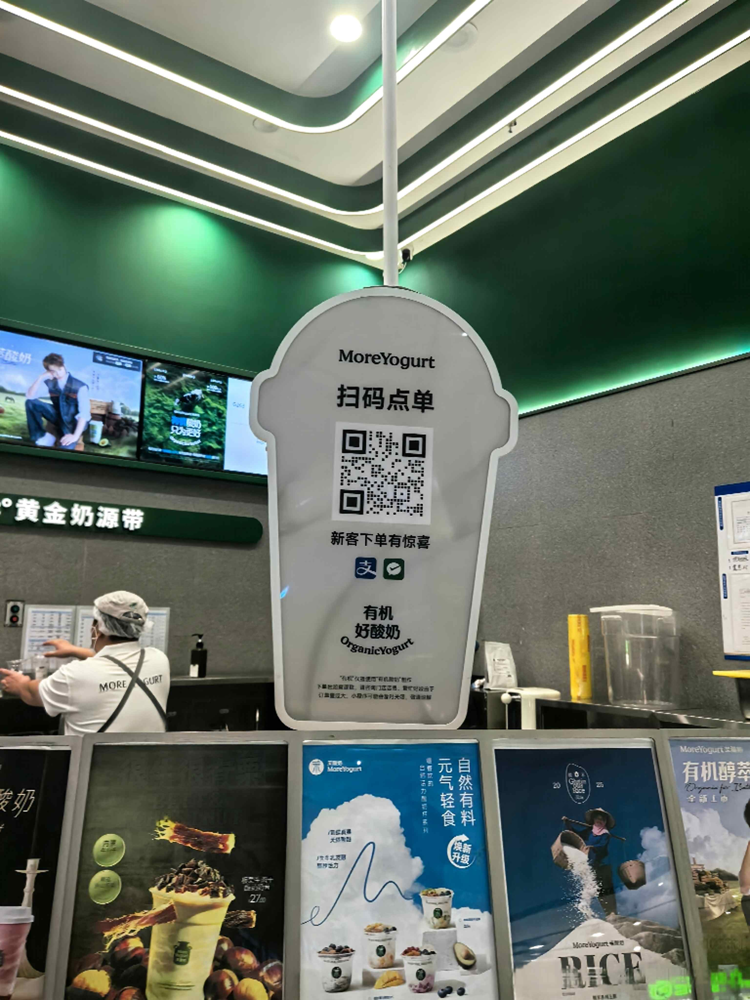
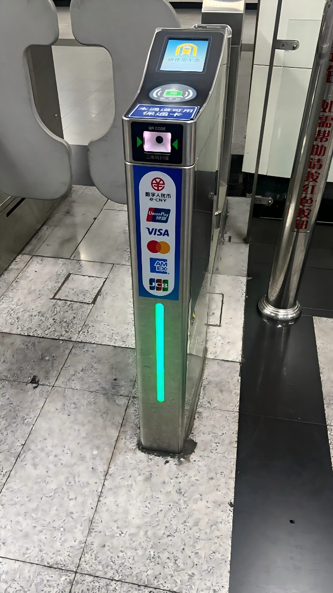
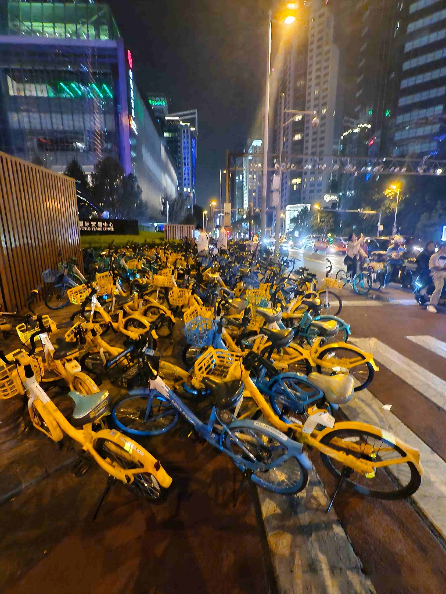

How Daily Life Works Smoothly in China
TL;DR: The Short Version
- QR codes run daily life. Pay, order food, ride the metro, unlock a bike. All from one app.
- Delivery is fast and everywhere. Groceries in 30 minutes, a full hot meal in 25. No tipping expected.
- Public transit works on your phone. One QR code for metro and bus, city to city. No tickets, no cash.
- Bikes are everywhere and cost almost nothing. They usually cost ¥1.50–3.00 per ride. Scan, ride, park in a reasonable spot. No docking stations.
- These are not futuristic gimmicks. They are everyday routines for hundreds of millions of people. Your trip gets smoother the moment you use them too.
Not Futuristic, Just Everyday Life
Every visitor I've hosted notices the same things. The fruit seller takes QR code payments. A hot meal arrives at the door in 25 minutes. A bike unlocks with your phone. The metro gate opens when you scan your QR code. After three or four of these moments, someone usually says: "Everything here just works faster."
From the outside, this looks like a sci-fi movie. From the inside, it's just how things work. My neighbor does these things while scrolling through her phone and half-watching her kid. The delivery guy who brings my lunch has done this 40 times already today. Nobody thinks it's futuristic. It's just efficient.
The point of this page is not to impress you. It's to show you what locals already know, so your trip runs as smoothly as theirs. Most of these habits take minutes to learn and change how your entire trip feels.
Payments in China: The QR Code Under Everything
If you only learn one thing before visiting China, make it this: the vast majority of transactions happen by scanning a QR code with Alipay or WeChat. Street food vendor at 11 PM: QR code. Michelin-starred restaurant: QR code. Metro gate: QR code. The guy selling watermelons from the back of a truck: QR code taped to a stick.
Cash still works legally, but in practice it's becoming rare. Many shops don't keep much change. Some younger cashiers have never handled cash at all. Setting up Alipay with your foreign card before you fly is the single highest-leverage thing you can do. It unlocks payments, metro, bikes, food delivery, and train tickets. One app, one setup, everything downstream.
For travelers, this means setting up Alipay before your first meal in China. One app, and suddenly every transaction in the country works the same way.

Food Delivery in China: A Hot Meal at Your Door in 25 Minutes
In most Chinese cities, ordering food delivery is not a special occasion. It is what people do on a Tuesday. Open Meituan or Ele.me on your phone, browse by photo, tap what you want, and a rider on an electric scooter brings it to you in 20 to 40 minutes. The delivery fee is usually ¥3 to ¥8. There is no tipping. The food arrives hot.
The rider network behind this is massive. During lunch rush, you'll see dozens of them in blue or yellow jackets weaving through traffic on e-bikes, insulated boxes strapped to the back. They know every apartment complex, every office building, every shortcut.
A friend visiting from London ordered hotpot at 9 PM on her first night. It arrived before she finished unpacking. She stared at the bags like they'd materialized.
The apps are mostly in Chinese, but the photo-driven interface makes ordering navigable even without reading. Tap the picture of what looks good. The price is clearly displayed in numbers. Tap the green button to confirm. If you're stuck, screenshot the menu and show it to your hotel front desk. They'll help.
For travelers, this means a hot meal is 25 minutes away, even if you can't read the menu. Screenshot what looks good and tap the green button. It works.
Public Transit in China: One QR Code, Most Cities
Chinese metros are clean, air-conditioned, and usually very punctual. What makes them different from metros elsewhere is how you pay: you open Alipay, tap "Transport," and it generates a QR code. Hold that code to the scanner at the gate. Walk through. Do the same when you exit. The fare (usually ¥2 to ¥7) is deducted from your Alipay balance or linked card.
Bus? Same QR code. Next city? Alipay typically switches to that city's transit code when you arrive. No separate app. No ticket machine. No transit card. Just your phone, already in your hand.
Metro stations have English signage in all major cities. Announcements are bilingual. The maps are clear.
The biggest adjustment for visitors is the security scan at every station entrance. You put your bag on a small conveyor belt and walk through a metal detector. It takes ten seconds. Locals swing their bags onto the belt without breaking conversation. With 10 million daily riders in Shanghai alone, it's less security theater and more crowd management.
For travelers, this means you can step off the plane, open Alipay, and ride the metro without buying a single ticket.

Bike Sharing in Chinese Cities: Scan, Ride, Park Right
Blue bikes. Yellow bikes. Green bikes. They are everywhere. On any street in any Chinese city, you will see rows of shared bikes parked along the curb. You open Alipay, scan the QR code on the handlebar, and the lock clicks open. Ride. When you're done, park in a designated or reasonable spot (not blocking a sidewalk or a car lane), push the lock closed, and walk away. Rides usually cost ¥1.50–3.00. No docking station. No reservation needed. No membership card.
This is not a novelty for tourists. It's how millions of locals commute every day. The bikes are heavy, single-speed, and built to survive rain, heat, and being dropped. They're not elegant. But the system is the most practical urban transport I've ever used. At 6 PM in Hangzhou, when taxis are stuck and the metro is packed, a shared bike gets you home through the back streets in 15 minutes. The bike lanes are wide and separated from car traffic on most main roads. It's genuinely pleasant riding.
For travelers, this means you can get from the metro to your hotel on a bike that usually costs ¥1.50–3.00 in the time it takes to wait for a taxi. Alipay scan, ride, park, done.

Train Tickets in China: Your Phone Is All You Need
China's high-speed rail network is the largest in the world. Trains run at 300 km/h, leave on time within seconds, and connect cities across thousands of kilometers. What visitors don't expect is how smooth the booking process is once you have Alipay set up.
Inside Alipay, you open the 12306 mini-program, search for a route (Shanghai to Hangzhou, Beijing to Xi'an, whatever), pick a train, pick a seat, and pay. That's it. Your ticket is linked to your passport number. At the station, you scan your passport at the gate, not a paper ticket. The gate reads your passport, matches it to your booking, and opens. No check-in counter. No printed boarding pass. Walk up, scan passport, board train.
This is the thing that surprises visitors most: you don't need to "pick up tickets" at the station. Your passport acts as your ticket. The system knows who you are and where you're going the moment you scan. If you booked through Trip.com instead of 12306, the process is the same. Passport scan at the gate, done.
For travelers, this means your passport is usually what you use at the gate after booking. Book on Alipay or Trip.com, show up 45 minutes early, scan your passport at the gate. No paper, no counter, no stress.
Small Things That Make a Big Difference
Beyond the big systems, there are smaller daily habits worth knowing. None of them are essential. All of them make your trip smoother:
Hot Water Is the Default Drink
In restaurants, at airports, in offices, the default drink offered is hot water. Not tea. Just hot water. It's not a code for "we don't have anything else." It's a genuine cultural preference rooted in traditional Chinese medicine (warm liquids are believed to aid digestion and circulation). Every public space has a hot water dispenser. Accept the hot water; it grows on you. Or ask for cold water specifically. Most places have both.
Napkins Are Tiny (Bring Your Own)
Restaurant napkins in China are often small, thin squares that disintegrate on contact with anything wet. Locals carry pocket-sized tissue packs, sold at every convenience store for ¥2 to ¥4. Buy a pack on day one, keep it in your bag, and you'll use it every single day. This is the kind of insider detail that nobody writes in guidebooks.
Public Bathrooms: Carry Tissue
Public restrooms in China frequently don't provide toilet paper. They're generally clean and plentiful, especially in malls, metro stations, and tourist areas, but TP is BYO. That pocket tissue pack from the convenience store serves double duty here. Squat toilets are more common than seated ones in public facilities, though hotels and international venues usually have both. Know before you go: it's not a lack of hygiene. It's a supply model where the user provides. Once you carry tissue, the bathroom situation goes from stressful to unremarkable.
Restaurant Bill Splitting Is Smooth for Locals
Among friends with Chinese bank accounts, splitting a bill is frictionless — one person pays, everyone else sends their share via the "transfer to friend" function in seconds. For travelers with foreign cards linked to Alipay or WeChat Pay: this feature is typically restricted. Overseas card accounts support spending at merchants, but person-to-person transfers and red packets (红包) are generally unavailable. If dining with locals, let them pay and settle up with cash or by covering the next round.
Green Cross Means Pharmacy
Look for the green cross sign. They're on every commercial street, every neighborhood block, every shopping area. Chinese pharmacies are walk-in, no appointment, and the pharmacist can recommend medication for common issues. Some pharmacists in bigger cities understand basic English. For a cold, a stomach bug, or a blister, it's often quick with something that works and costs ¥15 to ¥40.
For travelers, this means the small stuff is sorted. Pocket tissues, pharmacy runs, knowing the small habits. Knowing these five things takes five minutes and you'll use them every single day.
Why This Matters for Your Trip
None of these habits require special skills or cultural knowledge. They require setup: Alipay installed, a VPN running, an eSIM active. The checklist page covers all of that. What this page is saying is simpler: once those tools are in your pocket, the rest of daily life in China is smoother than in most countries you've visited.
The QR code at the fruit stand works the same way as the QR code at the metro gate. The delivery app works the same at noon and at midnight. The bike unlocks the same in Shanghai and in Hangzhou. The systems are integrated, consistent, and fast. The learning curve is steep for the first hour and flat for every hour after that.
A traveler I know put it this way: "By day three, I stopped thinking about how to pay and just paid. By day five, I forgot cash existed. By day seven, I realized I was moving through the city exactly like everyone around me." That's the goal. Not to be impressed. Just to be comfortable.
Get the Free China Arrival Checklist
Set up Alipay, get an eSIM, install a VPN. The practical first steps that unlock everything on this page.
Get the Free Checklist